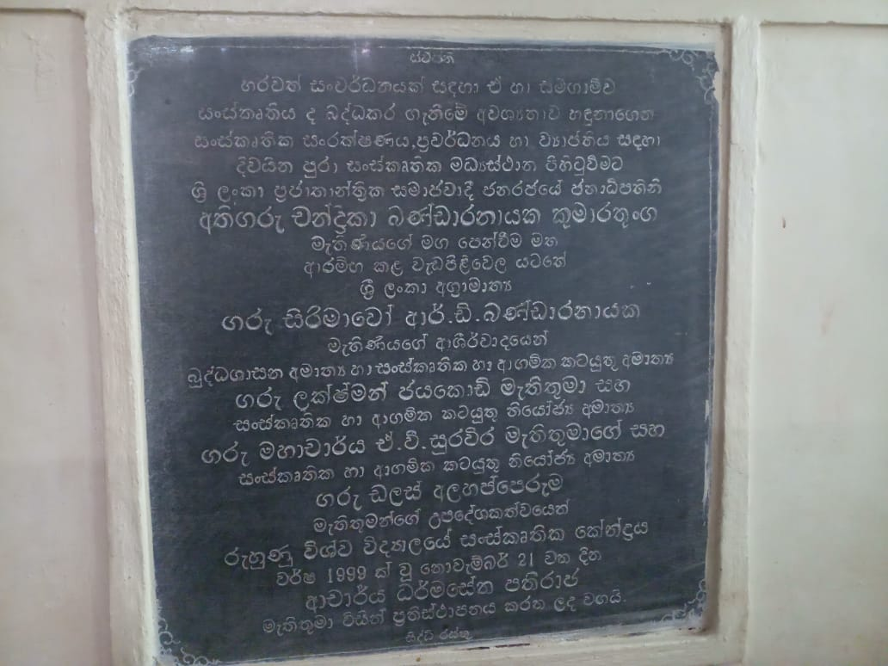

Vision
Be an institute which assists in people to improve their aesthetic activities by providing cultural face to national development and inheriting sensitive and ethical citizens to society
Mission
create a society with sensitive and ethical citizens by conserving classic cultural traditions of the country, promoting cultural values among people,and assisting to university community to expand the process thereon
Objectives
- Improve easthetic activities of university community
- Provide cultural services to university community and external society in the area(Artists,Writers, Researches etc.)
- Create a society enriched with cultural values
- Promote research studies and new publicationn
- Develop skills of persons belonging to any age group
History
This cultural center was opened by dr. Dharmasena Pathiraja on 1999.11.21
